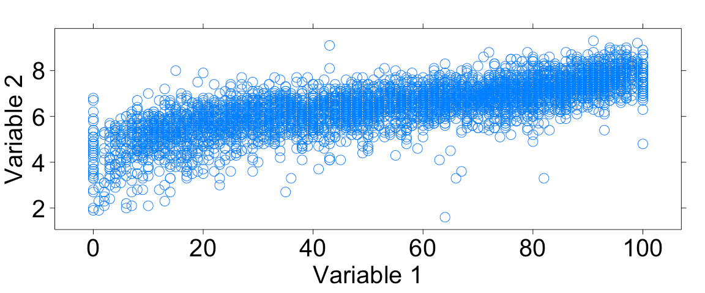

LAB 4D: Interpreting Correlations
Lab 4D - Interpreting correlations
Directions: Follow along with the slides and answer the questions in bold font in your journal.
Some background...
-
So far, we’ve learned about measuring the success of a model based on how close it’s predictions come to the actual observations.
-
The correlation coefficient is a tool that gives us a fairly good idea of how these predictions will turn out without having to make predictions on future observations.
-
For this lab, we will be using the
moviedata set to investigate the following questions:Which variables are better predictors of a movie's
audience_ratingwhen the predictions are made using a line of best fit?
Correlation coefficients
-
The correlation coefficient describes the strength and direction of the linear trend.
-
It's only useful when the trend is linear and both variables are numeric.

-
Are these variables linearly related? Why or why not?
Correlation review I
-
Correlation coefficients with values close to 1 are very strong with a positive slope. Values close to -1 means the correlation is very strong with a negative slope.
– Does this plot have a positive or negative correlation?
Correlation review II

- Recall that if there is no linear relation between two numerical variables, the correlation coefficient is close to 0. What do you guess the correlation coefficient will be for these two variables?
The movie data
-
Load the
moviedata using thedatacommand. -
The data comes from a variety of sources like IMDB and Rotten Tomatoes.
– The
critics_ratingcontains values between 0 and 100, 100 being the best.– The
audience_ratingcontains values that range between 0 and 10, 10 being the best.–
n_criticsandn_audiencedescribe the number of reviews used for the ratings.–
grossandbudgetdescibes the amount of money the film made and took to make.
Calculating Correlation Coefficients!
-
We can use the
cor()function to find the particular correlation coefficient of the variables from the previous plot, which happen to beaudience_ratingandcritics_rating.– But note, the
cor()function removes any observations which contains anNAvalue in either variable.– Calculate the correlation coefficient for these variables using the
corfunction. The inputs to the functions work just like the inputs of thexyplotfunction.
Now answer the following.
-
What was the value of the correlation coefficient you calculated?
-
How does this actual value compare with the one you estimated previously?
-
Does this indicate a strong, weak, or moderate association? Why?
-
How would the scatter plot need to change in order for the correlation to be stronger?
-
How would it need to change in order for the correlation to be weaker?
Correlation and Predictions
-
Find the two variables that look to have the strongest correlation with
critics_rating.– Compute the correlation coefficients for
critics_ratingand each of the two variables.– Use the correlation coefficient to determine which variable has a stronger linear relationship with
critics_rating. -
Fit two
lmmodels to predictcritics_ratingwith each variable and compute the MSE for each.– Use the MSE to determine which variable is a better predictor of
critics_rating. -
How are the correlation coefficient and the MSE related?
On your own
-
Select two different numerical variables from the
moviedata. -
Plot the variables using the
xyplot()function.– Would calculating a correlation coefficient for the two variables be appropriate. Justify your answer.
– Predict what value you think the correlation coefficient will be. Compare this value to the actual value. Finally, interpret what the actual correlation coefficient means.
-
Work with your classmates to determine which two variables have the strongest correlation coefficient.
-
Why do you think these variables are so strongly related? Is using the correlation coefficient to describe the relationship appropriate and why/why not?